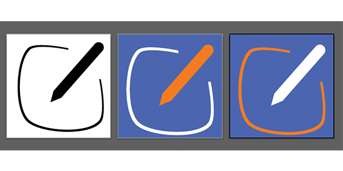
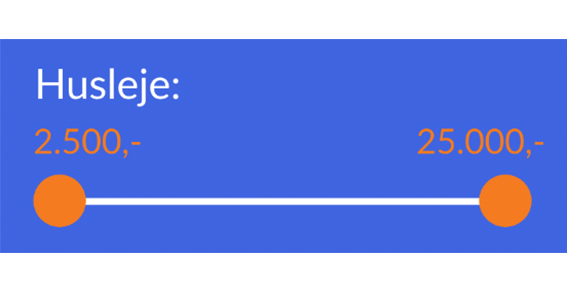

| F | L | O | W | 3 |
|---|
Kortsoteringstest

Byg en app
Et flowforløb der introduceret mig til målgrupper, personas, brugertestning, designcripper, typografi, samt vektorgrafik i programmet Illustrator. Forløbet afsluttende med projektet Byg en app, hvor jeg valgte at lave en boligsøgnings app med Adobe XD og designet ikoner med Illustrator. På denne side kan de læse om, brugertest og hvilken betydning de har haft for udviklingen den endelige prototype, samt andre forbedringer der er blevet fortaget. Den fulde rapport kan findes nederest på siden.
Kortsorteringstest
Den åben kortsorteringstest blev fortaget, for at organisere appens indhold og navigation. Testen blev taget af tre forskellige deltager. Resultaterne blev taget til betragtning i designet af prototypens navigation.
Se kortsortering her
Tænk-højt-testning og forbederinger
Prototyperne blev testet med en tænk-højt-test og dette var resultatet:
- ● Testpersonen blev forvirret over plusikonet, eftersom ikonet bliver brugt både som følgefunktion og zoom ind funktion.
- ● Testpersonen manglede, under siden justér søgning, et søgefelt hvor man kan søge efter et specifikt område.
Disse bemærkninger fra testen er taget med i den forbedret løsning.
Andre forbedringer
Her er oplistet andre forbedringer der er fortaget
- ● Skriften Courier er ændret til skifttypen lato. Denne ændring er foretaget, da skrifttypen tilegner sig bedre skærme og vil derfor være mere læsevenligt for en bruger.
- ● Tilføjelsen af et ikon. Der manglede nemlig et sted, hvor brugeren direkte i sine indbakke/udbakke kan oprette en ny besked.
- 
- ● Jeg har tilføjet et nyt søgeværktøj, under siden justér søgning, som mindsker brugerens brug af sin tastetur. Brugeren kan nu juster sin søgning ved at trække i de to prikker.
- 